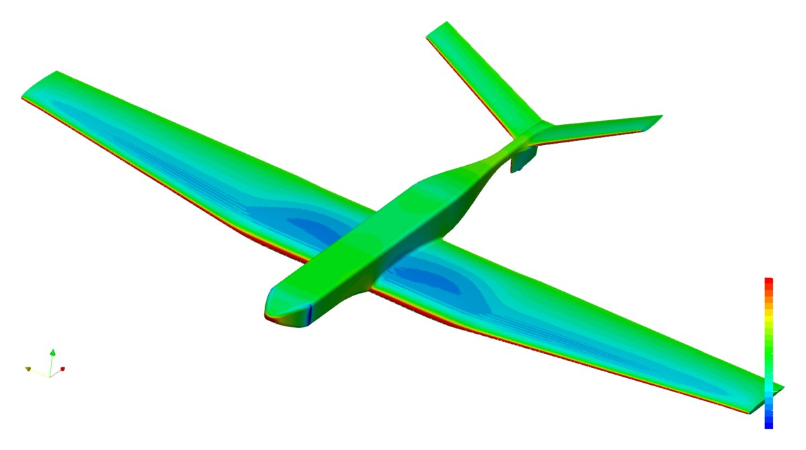

Technical report · October 2026 · 61 pages
Heméra: Aerodynamic Design through CFD
My role. Sole author; work done in my second year of the BSc. I led the campaign, built the meshing and numerical setup and ran the 42 simulations; five polar points computed by other members of the department are credited as such.
The CFD campaign that brought aerodynamics into the design decisions of Heméra, Fly-Mi's aircraft for the Air Cargo Challenge 2026. Steady RANS simulations in OpenFOAM, run on a laptop, were used to choose the fuselage, to analyze the wing and high-lift devices, and to study the complete aircraft in cruise, at high incidence and at takeoff.
Results. The fuselage candidates differed by less than 1% in total drag, two thirds of it friction, so the tail cone was chosen for flow quality, not for a drag figure: it removes a vortex pair from the aft body. Retracting the landing gear cut cruise drag by 13.6%. The report states the resolution of each comparison and its limits: a fully turbulent model where the boundary layer is probably partly laminar, and a two-level mesh study.